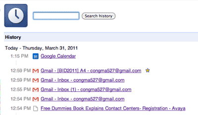
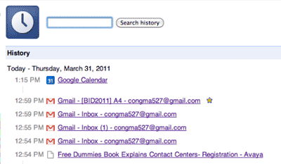
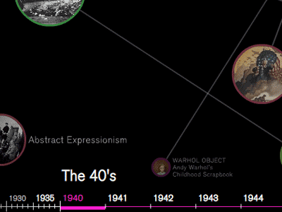
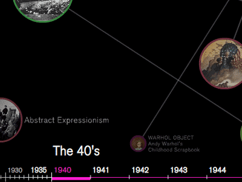

The Problem
The Status Quo
This is what your typical browser history looks like:
But with modern browsers looking something like this:
...our current log doesn't cut it anymore.
This is what your typical browser history looks like:
But with modern browsers looking something like this:
...our current log doesn't cut it anymore.
Storing browser history as a single list of visited sites used to work when people browsed with one, tabless window. But with tabs and multiple windows, more people are multitasking, visiting many sites with 3-5 tabs open at one time.
To fully visualize this new browsing experience, browser history should provide:
A sense of time spent on the page. In browsing terms, the difference between two seconds and a minute is a page bounce and an engaged user.
A way to show activity over multiple tabs.
Visualized conceptual relations between tab groups.
Active vs. inactive tabs
Time spent on a site
Age (time since last visited)
Number of visits
Origin (parent-child)
Topic relations between pages
A visually appealing, interactive ZUI provides a pleasant way to browse, but at lower levels the strucutre between nodes becomes confusing.
 

RescueTime provides a decent breakdown for the time spent; however, it provides no relationships or sense of time between applications.
This XKCD chart offers non-interactive version of what a future prototype should look like. The character's journeys ("streams") can stand in place of websites, with their interactions with other characteres representing moving between different links.
The addition of bar graphs by site makes it easy for users to see what their most visited sites are. However, when looking back for specific pages it becomes impossible to determine exactly which narrow band of color is the one they want.
The authors developed a web browser companion called Domain Tree Browser (DTB) that builds a tree structured visual navigation history while browsing the web. The Domain Tree Browser organizes the URLs visited based on the domain name of each URL and shows thumbnails of each page in a zoomable window.
MosaicG is derivative work of NCSA Mosaic version 2.5 which enhances the history keeping facility of the browser by providing a two dimensional view of the documents a user has visited in a session. It is intended as an easy to use aid in navigating a collection of hypertext documents. Presenting titles, URLs and thumbnail images allows a user to easily recognize a previously visited documents, and provides an easy way for the user to re-visit that document and analyze the structure of a set of hypertext documents.
The authors compare zoomable user interfaces with and without an overview to understand the navigation patterns and usability of these interfaces. The results suggest a tradeoff between the two interfaces in subjective satisfaction and task completion time. Subjects scored the interface with an overview higher on seven subjective satisfaction questions, and 80% preferred this interface. In contrast, subjects were faster without the overview when using one of the two maps.
This paper presents PhotoMesa, a zoomable image browser, and two new algorithms for laying out groups of images or other fixed-size visual objects. The primary innovations are: 1) a simplified set of interactions for navigating through a set of objects in a zoomable user interface; and 2) algorithms to lay out fixed-size objects, such as images, in two-dimensional space, automatically creating groups for related objects.
Double-click to zoom!
This project is by Paul Caravelli, Chloe Ma and Brian Yee.
We made this for 05-899C: Sensemaking, taught by Niki Kittur at Carnegie Mellon University.